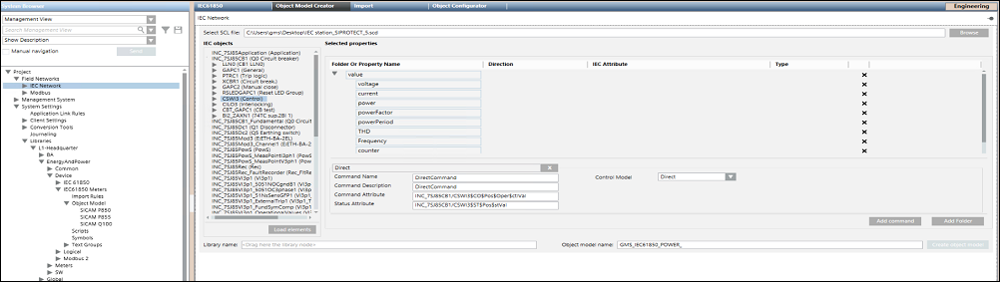

Object Model Creator Workspace
The Object Model Creator Workspace allows you to design object models from the online or offline methods.

Item | Description |
Select SCL File | Displays the selected Substation Configuration Language (SCL) file. |
Browse | Allows you to specify the path of the SCL file. The SCL file can have either of the following extensions, .cid, .icd, .iid, or .scd. |
Load elements | Displays the information of the IEC61850 device objects and their associated properties in a tree structure in the IEC objects list. |
Selected properties | Displays the folder structure for the grouping of related properties of the object model and other columns such as Property Name, Direction, IEC Attribute, and Type. |
Add Folder | Allows you to create a new folder to drag the leaf nodes from the tree structure in the IEC Objects list. |
Property Name | A unique name for the property |
Direction | Direction of the property |
Add command | Displays fields to specify the details of the command properties of the device. |
Command Folder Name | Folder name under which the device command properties are to be added. For example, if you want to issue commands to properties of a circuit breaker, then you can specify the name as Circuit_Breaker_Device. |
Command Name | Name of the command property of the device for which you want to trigger the command. For example, if you want to trigger the open and close command for a circuit breaker on a name property, then specify Name in the Command Name field. |
Command Description | Description of the device property for which you want to trigger the command. |
Command Attribute | Control property of the device for which you want to trigger a command. You must drag and drop the control property from the IEC objects section. |
Status Attribute | Status property of the device for which you want to trigger a command. You must drag and drop the control property from the IEC objects section. |
Control Model | Select the type of commanding from any of the following options for the device: Direct: Command for the device property can be executed via Direct Mode without selecting the object first |
Library name | Name of the IEC61850 library. You must drag the library object from the System Browser. |
Object model name | Name of the object model to be designed |
Create object model | Creates the object model with the specified details. |